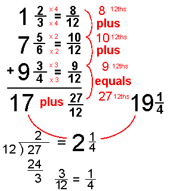

Arithmetic

Integer Arithmetic
- Used for time points in DEC
- Used by scenarios
- Undecidable theory, restrict to a fragment
- Axiomatization, e.g., Peano
- Call out to computation
An Adhoc Axiomatization
- Notions of equality, addition, order
- Limited to 0 to 9
- Ordered instances of addition, e.g., 3 + 5 = 8
- Symmetry of addition, ∀ X,Y (X + Y = Y + X)
- Adjacent instances of ordering, e.g., 6 < 7
- Nothing less than 0, ~∃X X < 0
- Inequality definition,
∀ X,Y (X ≤ Y ⇔ ( X < Y | X = Y))
- Total ordering,
∀ X,Y ( X < Y ⇔ (~(Y < X) & (Y ≠ X))